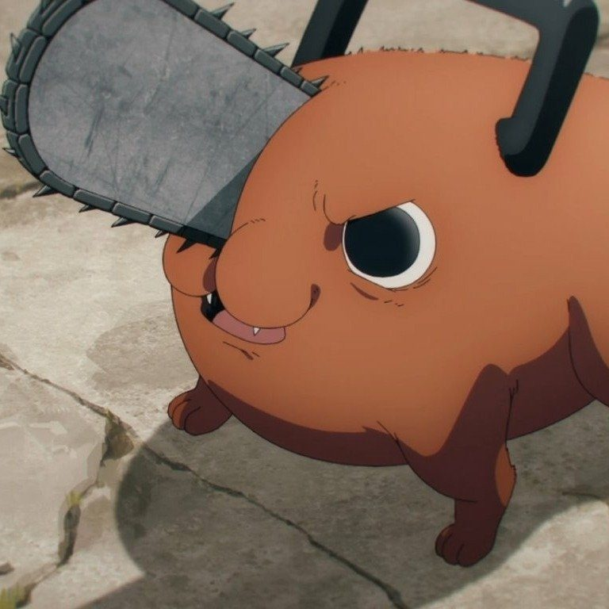

Concept Devourer
At ordinary levels this is a savage close-range chainsaw technique. Its reality-warping ceiling appears when a defeated supernatural concept can be partially or permanently removed from the world.

Concept Devourer
At ordinary levels this is a savage close-range chainsaw technique. Its reality-warping ceiling appears when a defeated supernatural concept can be partially or permanently removed from the world.
What the technique actually does.
Fear Names
The taxonomy of the technique: Fear Names are conceptual tags on major curses, shikigami, techniques, and supernatural entities, never ordinary humans, never mundane objects. Erasure is a ritual with a ledger, and the GM and player record every one.
- Your chainsaw attacks are melee CE attacks that can Black Flash.
- Fear Names are conceptual tags attached to major curses, shikigami, techniques, or supernatural entities. Ordinary humans and mundane objects do not have a devourable Fear Name.
- Erasure is never triggered by ordinary damage. It requires a defeated eligible target, a Devour action, and increasingly severe conditions.
- GM and player should record every erased Name because it can alter future encounters.
Field notes. Subject: a mouth that remembers being hungry. Three truths govern him. First, the chainsaws are not the technique, they are the teeth it grew; the hunger was there first. Second, erasure is never an accident of damage: it requires a defeated eligible target, a Devour action, and increasingly severe conditions, the ledger must balance. Third, he runs on the blood he sheds: Blood tokens earned from slashing damage, spent to heal or to extend his reach, because a predator that cannot feed itself starves mid-hunt. Hence the maxim: he does not destroy things. He refuses them.
Level 1–20 Progression
1Rip Cord
Bonus action · 1 CE · 1 minute · Manifest arm/head chainsaws: unarmed strikes deal 1d8 slashing, plus one Devour Die once per turn.
The ignition. The sound of the cord is the sound of the technique announcing its terms.
Devour Die progression: d6 at levels 1–4, d8 at levels 5–10, d10 at levels 11–16, d12 at levels 17–20. The original expansion repeatedly references a Devour Die without printing its value. This reviewed edition completes that omission using the same four-step progression explicitly established by Vector Authority in the same book. This is a codex clarification, not a claimed quotation from the source.
3Blood-Fed Engine
Passive · When you deal slashing damage: gain 1 Blood token (max PB) · Bonus action: spend any tokens to regain one Devour Die HP per token (technique healing, not RCT).
The economy of the predator. He eats to heal the way a fire eats to grow.
6Hero's Rush
Passive (while Rip Cord active) · +10 speed · When you reduce a creature to 0 HP: as a reaction, move half your speed and make one chainsaw attack.
While the saws run, he runs. Momentum is the second hunger.
9Devil Butcher
Passive · Chainsaw attacks ignore resistance to slashing and necrotic · Criticals vs summons, curses, or shikigami suppress regeneration until the start of your next turn.
His saws learn what they are cutting. The butcher does not ask what it is made of. He cuts anyway.
11Partial Devour
Action · 4 CE · Over an eligible supernatural creature at 0 HP: CE ability check vs DC 10 + target's PB (proxy PB 2 + CR÷4 rounded down, min 2 for CR creatures) · Success: remove one named feature, damage immunity, or summon form from its future manifestations for 24 hours · Bosses may use Legendary Resistance.
The first erasure. A nibble, not a meal, but the world learns to flinch.
13Hero of Hell
Bonus action · 6 CE · 1 minute, once/long rest · Large size, +20 speed, climb speed, advantage on Str checks/saves, chainsaw reach 10 ft, +2 Devour Dice on attacks · Cannot speak intelligibly while transformed.
The transformation. The hero of hell has no speeches.
15Fear Resonance
Passive · A creature within 60 ft that is Frightened of you: your first attack against it each round has advantage · If a creature publicly survives or defeats you, the GM may deny this benefit against witnesses until you reestablish terror.
His reputation becomes a weapon. But survival is its own argument. Terror is a resource he must keep earning.
18True Devour
10 CE + 1 uninterrupted minute consuming the manifested core of a unique supernatural entity you personally reduced to 0 HP · Cha save · Failure: erase one core concept from the campaign until a Maximum-level reversal (success: Partial Devour for 7 days) · Player and GM must agree beforehand on what the erasure means.
The technique’s true function. Nothing in this dossier should be attempted casually.
20Chainsaw Man
Passive · Hero of Hell loses its daily limit · Once/long rest, when killed with 3+ Blood tokens or a willing ally's blood: return at 1 HP after 1 round with Rip Cord auto-activated.
The end of limits: death itself is refused. The chainsaw man’s contract with mortality is simple: he declines.
Pinnacle / Maximum
The Maximum is True Devour at full commitment: usable only on an eligible entity already at 0 HP after True Devour is unlocked, all remaining CE surrendered, 2 exhaustion after. The target saves with disadvantage: failure performs True Devour, success Partial. This is not for abstract world concepts without a manifested bearer. Some names should cost everything to eat. Maximum Technique, Eat the Name (12 CE; action): usable only on an eligible entity already at 0 HP and after True Devour is unlocked. Give up all remaining CE and gain 2 exhaustion after the attempt. The target makes Cha save with disadvantage; failure performs True Devour and success performs Partial Devour. This is not usable on abstract world concepts without a manifested supernatural bearer.
Technique Feats
Vrrrm Vrrrm
He revs the saws as they manifest: spending 2 Blood tokens turns the activation itself into an attack, each creature within 5 ft saves or takes a Devour Die. The entrance is the attack.
Blood Lash
Bonus action, 3 Blood tokens: pressurized blood whips extend his chainsaws to 10-ft reach until end of turn. Hunger has range.
Door to Hell
When he reduces a cursed spirit to 0 HP, he learns whether it has manifested elsewhere or can reincarnate under campaign lore. The devourer keeps a map of what he has eaten.
Save Me, Chainsaw Man
Reaction when an ally within 60 ft drops to 0 HP: he moves up to his speed toward them and makes one chainsaw attack against an adjacent creature. The hero arrives the way heroes do, loudly, and through the enemy.
Binding Rulings
Source Notes
- The fictional ability is the inspiration; all JJK 5e numbers and progression procedures are homebrew.
- Source reference